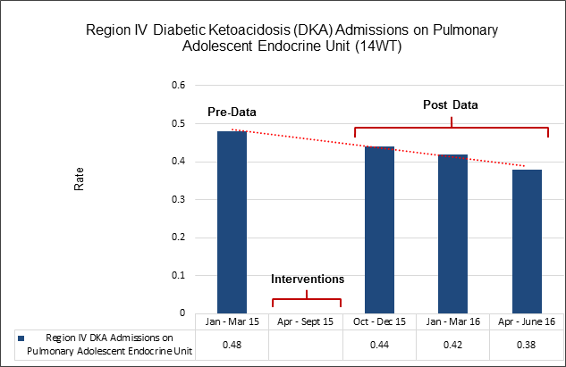

SE10EO
Commitment to Community Involvement SE10EO
Nurses participate in the assessment and prioritization of the healthcare needs of the community.
-
Provide one example, with supporting evidence, of an improvement in an identified healthcare need that was associated with nurses' partnership with the community. Supporting evidence must be submitted in the form of a graph with a data table that clearly displays the data.
SE10EO
Appraisers Feedback:
Goal that matches the narrative. Note: The populations being discussed involved those from region IV. The goal statement states “Decrease the rate of readmissions of DKA patients to the Pulmonary Adolescent Endocrine Unit (14 WT)”. It is not clear if the readmission rates in the goal involve all readmissions on the unit, not just those from region IV.
Data that matches the narrative. Note: The data displays “Decrease the rate of readmissions of DKA patients to the Pulmonary Adolescent Endocrine Unit (14 WT)”. It is not clear if the readmission rates in the data involve all readmissions on the unit, not just those from region IV. The data does not demonstrate that the education of a specific school district was related to the reduced readmissions.
Texas Children's Hospital:
Please see below the revised submission for SE10EO with the goal and data that shows the decrease in the rate of admissions of DKA patients from within Region IV to the Pulmonary Adolescent Endocrine Unit (14 WT). Additional Documentation and data provided - highlighted in yellow.
Decreasing the Rate of Admissions of DKA Patients from within Region IV to the Pulmonary Adolescent Endocrine Unit
Background/Problem
Houston is the nation’s fourth-largest city, and families who reside in the area come from a variety of backgrounds and have a variety of needs. Region IV includes the public schools in seven counties in and around the greater Houston area. This large region contains 54 school districts with a total of 1,294 campuses: 750 elementary schools, 203 middle schools, 49 junior high schools, 143 high schools and 25 elementary through secondary schools. Region IV serves 1,038,480 students, which is one fourth of the state’s public school students.
School-aged and adolescent children with diabetes are faced with multiple challenges in managing their disease. From January 2015 through March 2015, clinical nurses at Texas Children’s Hospital (TCH) Diabetes and Endocrine Care Clinic identified an increase in phone calls from Region IV school nurses expressing concerns and asking questions about the treatment and management of diabetic patients in the schools. A multidisciplinary team consisting of clinical nurses/certified diabetes educators, a dietician and physicians were concerned about the inconsistent education being provided by school nurses in the Region IV schools. The school nurses were using multiple school packets that contained information they needed to care for and manage diabetic children during school hours. However, the multidisciplinary team was concerned about inconsistencies in the education being provided through these multiple packets.
The multidisciplinary team theorized that the inconsistent education, and thus the inconsistent management of diabetic children in the schools, was contributing to the increase in admissions of DKA patients to the Pulmonary Adolescent Endocrine Unit (14 WT). Diabetic ketoacidosis (DKA) is an acute, major, life-threatening complication of diabetes that occurs mainly in patients with type 1 diabetes. DKA is usually trigged by an illness or a problem with insulin therapy. Missed insulin treatments or inadequate insulin therapy can leave the body with too little insulin in the bloodstream, triggering DKA. The multidisciplinary team was concerned that the improper management and care of the diabetic population in the Region IV schools was contributing to the increased admissions of DKA patients to the Pulmonary Adolescent Endocrine Unit (14 WT).
From January 2015 through March 2015, the rate of admissions of DKA patients from within Region IV to the Pulmonary Adolescent Endocrine Unit (14WT) was 0.48. This rate is calculated by dividing the number of DKA admissions from within Region IV to 14 WT by the total number of all Region IV diabetic patients admitted to 14 WT.
Goal Statement
Decrease the rate of admissions of DKA patients from within Region IV to the Pulmonary Adolescent Endocrine Unit (14 WT).
Description of the Intervention/Initiative/Activities
The intervention period was April 2015 to September 2015.
April 2015
In April 2015, the TCH Diabetes and Endocrine Care Clinic established a diabetic community outreach task force. The task force comprised clinical nurses/certified diabetes educators (CDE), a dietician and physicians.
May 2015–June 2015
From May 2015 to June 2015, the community outreach task force determined that the content of the Region IV school packets needed to be revised and that the education provided in them needed to be standardized. The task force compared the multiple school packets to identify redundancies and determine the critical information that needed to be included for Region IV school nurses to be able to provide high-quality and standardized care to the diabetic population during school hours. The task force condensed the multiple school packets into one packet to be used in the treatment and management of the diabetic population in the Region IV schools. The insulin dosing chart was included in the packet to ensure proper insulin administration.
The task force partnered with the Region IV school nurses, and the revised school packet was sent to Lisa Blackmon, MS, RN, Nurse Specialist, Health and Medical Services, Houston Independent School District (HISD), Region IV Liaison. Blackmon represented school nurses in her region of HISD. The task force collaborated with Blackmon by email and received suggested modifications and the necessary approvals. With the school nurses’ partnership, the task force was able to make the recommended changes and implement the revised school packet.
July 2015–August 2015
Previously, the initiation and maintenance of the school packet had been done using hard copies. The patient and family would receive the school packet at the Diabetes and Endocrine Care Clinic and would then be responsible for providing it to the school nurse. It was not, however, always given to the school nurse, thus impeding the nurse’s ability to treat and manage the care of the diabetic patient in the school.
The difficulty in receiving the school packets from students and families was identified through the partnership with the school nurses. To ensure the school nurses receive the packet, and to make it more accessible to all providers (inpatient and outpatient) caring for the diabetic patient, the task force proposed that the school packet be created in the electronic health record (EHR). The packet could then be transmitted directly to the school nurse rather than relying on the patient/family to provide a hard copy to the school. The task force also determined that incorporating the packet into the EHR would provide a consistent way to make necessary updates throughout the year.
Ashley Dikes, MSN, RN, System Analyst, EPIC Information Services, was tasked with creating the electronic copy of the school packet to be incorporated into the patient’s EHR. The task force reviewed the electronic copy for accuracy and ease of use, and Dikes collaborated with EPIC to incorporate it into the EHR.
September 2015
In September 2015, the task force, with the partnership of school nurses, identified the need for education on the school packet for Region IV school nurses. The task force created educational materials to be presented to approximately 100 school nurses at the Region IV school nursing conference in September 2015. The multidisciplinary task force provided education on the retrieval, content and use of the school packet. This open forum allowed the Region IV school nurses to provide recommendations or necessary modifications to the school packet, and they demonstrated their understanding by practicing documenting in the school packet and calculating dosages of insulin to administer.
Participants
Diabetic Community Outreach Task Force
|
|||
Name |
Discipline |
Title/Role |
Department |
Jaime Segovia, CDE, RN |
Nursing |
Clinical Nurse, Certified Diabetes Educator |
Diabetes/Endocrine Care Clinic |
Ashley Dikes, MSN, RN |
Nursing |
Systems Analyst |
EPIC Information Services |
Kim Mason, RN, CDE |
Nursing |
Clinical Nurse, Certified Diabetes Educator |
Diabetes/Endocrine Care Clinic |
Denise Bryant, RN, CDE |
Nursing |
Clinical Nurse, Certified Diabetes Educator |
Diabetes/Endocrine Care Clinic |
Sonia Guerra, RN, CDE |
Nursing |
Clinical Nurse, Certified Diabetes Educator |
Diabetes/Endocrine Care Clinic |
Nelly Miranda, RN, CDE |
Nursing |
Clinical Nurse, Certified Diabetes Educator |
Diabetes/Endocrine Care Clinic |
Afshan Mohammed, RD/LD, MS, CDE |
Dietician |
Diabetes Educator Fellow |
Diabetes/Endocrine Care Clinic |
Lisa Blackmon-Jones, MS, RN |
Nursing |
Nurse Specialist, Health and Medical Services |
Houston Independent School District/Region IV Liaison |
Reepa Suresh, MD |
Medicine |
Physician |
Diabetes/Endocrine Care Clinic |
Bonnie McCann, MD |
Medicine |
Physician |
Diabetes/Endocrine Care Clinic |
SE10EO, Participants
Outcomes
A multidisciplinary team from the Diabetes and Endocrine Care Clinic partnered with Region IV school nurses to improve overall outcomes for diabetic patients. As a result of the partnership with Region IV school nurses, standardized education was implemented through a revised school packet that was made accessible to all providers, including school nurses caring for diabetic patients. Following this, TCH saw a decrease in the rate of admissions of DKA patients to the Pulmonary Adolescent Endocrine Unit. By improving the management and care of diabetic patients provided by school nurses in the Region IV schools, the rate of admissions from within Region IV DKA patients to the Pulmonary Adolescent Endocrine Unit (14 WT) decreased from 0.48 for January 2015–March 2015 to 0.44 for October 2015–December 2015, 0.42 for January 2016–March 2016 and 0.38 for April 2016–June 2016.

Evidence SE10EO-a,
Region IV Diabetic Ketoacidosis (DKA) Admissions on
Pulmonary Adolescent Endocrine Unit (14WT)